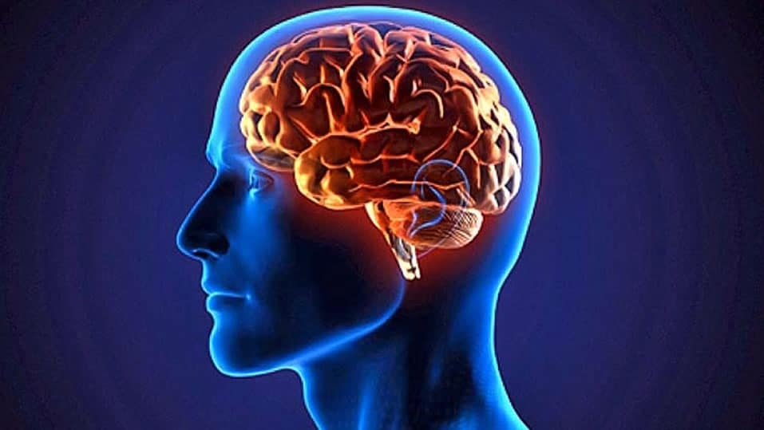
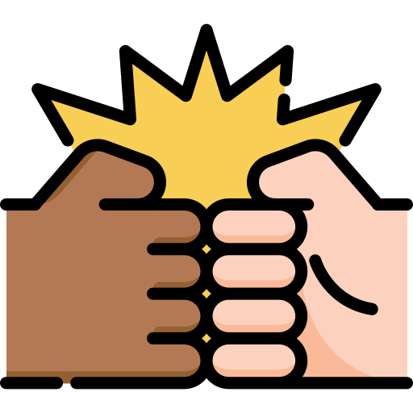

En la actualidad, y más que nada a edades cortas, al término "amistad" se le da menos
importancia de la que debería,
pues la mayoría de personas de corta edad piensan que un amigo es simplemente alguien que te
cae bien y que tener un amigo es
tan simple como solo ir a fiestas de los amigos y platicar de juegos, aspectos que, aunque
se incluyen al decir que alguien
es un "amigo", no solo es esto, pues también se incluyen otras cosas que, auqnue uno no lo
quiera o no lo crea, llegan a
tener repercución en el funcionamiento de la sociedad.
Desarrollo
Desde que el ser humano ha existido en comunidades, en cualquier parte del mundo, siempre se
han tenido a las llamadas "amistades".
Las amistades son muy importantes para el desarrollo de cada persona, pues son una
preparación para la vida en todos los aspectos.
Un amigo llega a ser tam importante que mucha gente considera a sus amigos sus "hermanos" o
incluso parte de "su familia", debido a
las experiencias tan cercanas que uno ha vivido con los amigos, tales como salir a fiestas,
platicar de videojuegos, de hobbies, e incluso
a veces de problemas.
Ahora bien, sabemos que los amigos son importantes para todos, pero ¿Qué tan importantes
pueden llegar a ser? Quiero decir, sabemos
que un amigo debe estar ahí para sus amigos en las buenas y en las malas, pero ¿Esto qué
significa? ¿Realmente estamos para un amigo
en las buenas y en las malas? ¿O solo en las buenas? Uno pensará naturalmente que siempre
está ahí, pues cuando el amigo les pide ayuda, uno
sale al rescate, pero ¿Qué ocurre con todos sus problemas que decide no contar? ¿Acaso
ayudamos en eso también? Claro que, aunque cruda, la
respuesta casi siempre es no, pero ¿Y qué si les dijera que un amigo puede producir o una
persona negativa para la sociedad o positiva para
la misma?¿Me creerían? Bueno, eso es lo que veremos en este blog.
Motivación
Escogí este tema porque es algo que he estado pensando últimamente; todos sabemos que los
padres son los responsables de la formación de
los hijos y de ellos depende si el hijo le hace un bien o un mal a la sociedad, sin embargo
muy pocos se ponen a pensar que un amigo cumple
una función tan importante como la de los padres, pues ellos pueden ser, o el complemento, o
el disyuntivo de la formación de una persona.
Tomemos de ejemplo, todas las personas que han cometido atrocidades, ¿Acaso no solo era
gente que no era comprendida?¿Acaso algo hubiera cambiado
si los amigos le ayudaran a seguir adelante? La respuesta es sí, y por eso hago este blog,
para concientizar a la gente.
Imaginen todas esas personas que se vuelven adictas a algo por la baja
autestima, ¿Acaso algo habría cambiado si en su vida hubiera entrado un amigo que los
apoyara y entendiera?
El significado de la amistad
12/11/21
Muchos creen que si conoces a alguien y te cae bien ese día ya es tu amigo, sin embargo,
tener una amistad es algo más complejo que eso,
y el problema radica cuando uno decide abandonar las amistades o tener una amistad tóxica
porque no entienden el significado verdadero de
esto. Por eso, traigo una lista que menciona los 10 aspectos más importantes que implican
tener una amistad.
Sufrir sus derrotas
Celebrar sus triunfos
Respetar su forma de ser
Apoyarlo en los momentos difíciles
Disfrutar de su compañía
Ser su apoyo emocional
Ayudarlo con sus proyectos si es que lo necesita
Corregir sus defectos sin ser soberbio o grosero
Que la amistad sea un complemento de nuestra vida
Que todo lo anterior sea mútuo
Ayudar a un amigo es algo que siempre escuchamos pero, ¿no se han puesto a
pensar en toda la responsabilidad que tenemos encima? Quiero decir, en momentos donde
uno se siente mal, cualquier emoción llega más fuerte, por lo que si uno comete un paso
en falso, o ni siquiera da el primer paso de ofrecer ayuda, podría estar perdiendo la
oportunidad de hacer mejorar a aquel amigo.
Sitios oficiales del tema
12/11/21
Por mucho que quisiera basarme en la ciencia (lo cuál voy a hacer), este blog no deja de ser
personal y subjetivo, por lo que decido compartir
algunas fuentes oficiales que, o son de donde abré sacado toda la información antes vista
(además del sentido común y la experiencia),
o serán fuentes que les permita tener un mayor conocimiento de este tema.

Si se ponen a analizar, las fuentes de información se sienten muy diferentes
entre sí, y lo que pasa es que quiero que veamos un poco más allá; quiero que veamos
cómo funciona en secreto todo lo que conllleva el tener una amistad. Para esto, la
mayoría de fuentes se conectan en una cosa: el funcionamiento del cerebro en las
amistades.
 La
verdadera importancia de la amistad
28/11/21
Por: El canal de youtube "Supérate con Psicología" (Autor exacto desconocido) el
22 de julio del 2018
Hace unas entradas habíamos hablado de ciertos puntos que se deben de tener en mente cuando
nos referimos a alguien como un amigo, sin embargo, honestamente esto se vió desde un punto
de vista muy moral, pues algo que es cierto es que existen muchos tipos de amigos, como
amigos que solo están para jugar, otros para platicar, etc. Por eso, esta vez traigo un
video que, aunque tiene el mismo objetivo de hacernos reflexionar el sentido de la amistad,
este video lo trata más con hechos y estadísticas, y ya no desde un punto de vista moral y
ético.
En mi opinión, este video está bueno, los dibujos y el fondo hacen más ameno el video, el
contenido es de calidad y se nota que las bases son reales. La voz también relaja un poco,
lo suficiente para poder quedarse escuchando sin llegar a molestarse. Me parece excelente
porque era justo lo que quería: algo que también hablara de la importancia de la amistad
pero desde otra perspectiva.
Investigación
19/12/21
¿Las amistades son incondicionales o se debe exigir un mínimo?
Antes de empezar, quisiera aclarar que, para esta entrada, trataré de contarles sobre la amistad pero desde un aspecto más filosófico y científico, pues desde los primeros artículos hemos hablado de la amistad desde un punto de vista muy "subjetivo", donde simplemente me basé de mis experiencias y conocimiento para intentar hablar de este tema, pero debido a que hay gente que quiere ver si las cosas que dice uno las respalda la filosofía, la Iglesia o la ciencia primordialmente. Es pora eso que existe este artículo, para ver este tema de una manera más "experimental" a la vez que científica.
Primero, tengamos en cuenta que la amistad implica una relación de afecto y cuidado mutuo, una relación en la cual la preocupación por el otro no deriva de consideraciones instrumentales en torno a beneficios estrictamente personales1, sin embargo, surgen conflictos cuando pensamos más allá y nos surgen varias preguntas, como la siguiente: ¿Se necesita que para tener amistades se tengan ciertas cualidades mínimas? Es necesario aclarar que, debido a que cada pregunta puede ser profundizada a más no poder, hablaré de una pregunta por subtema, empezando con la anterior.
Empecemos con la primera pregunta que se había mencionado en el párrafo anterior, que para que se entienda mejor, pone en duda lo siguiente: ¿Para tener una amistad, debes elegir a ciertas personas con unas características, o en cambio puedes elegir a cualquiera como tu amigo? Esta pregunta es interesante, porque dependiendo de la respuesta que se da, las conclusiones podrían cambiar nuestra forma de percibir el mundo. Y es que pensemos más a fondo que, aunque uno no lo quiera aceptar, la mayoría de personas no tienen una amistad incondicional, pues la mayoría busca ciertas características mínimas que debe tener la otra persona.
Así entonces el debate es el de ¿cuál opción es correcta? Quiero decir, ¿acaso lo correcto sería aceptar incondicionalmente aceptar a una persona como amiga, aún si tiene defectos como en su trato hacia tí, o debes de ser un poco más selectivo y solo escoger personas que tengan ciertas características, dejando solos a los que no cumplan esas características?. Claramente esto no puede resolverse rápidamente, y es por eso que la pregunta la dejo al aire, para que cada quien escoja la opción que según uno mismo es la opción más lógica. Claramente, con esto se entra en un campo bastante filosófico, pues lo que estamos haciendo es dudar de lo que creemos que debería ocurrir siempre.
¿Escoger entre amistades?
Ya hablamos de una pregunta digna de debate, así que ahora vamos a hablar de otra con la misma intención. En esta ocasión se pone sobre la mesa lo siguiente: Si uno estuviera en situación donde tuviera que escoger una amistad a cambio de otra, ¿cuál escogería? Así, como se dice en el sitio web, Lo que aquí se plantea no es un simple conflicto práctico. La sugerencia es que una moralidad que requiriese ese tipo de imparcialidad (que declarase que el amor, o la amistad, son razones inadmisibles para salvar a una persona en vez de a otra) eliminaría el amor y la amistad, pues es esencial a estas relaciones el que en esa situación uno tenga razones para otorgar primacía al amigo o a la persona querida.2
Resulta interesante que, esta pregunta se relaciona con la anterior, pues con la primera habíamos hablado sobre las personas de las amistades y si deberían cumplir o no ciertas características. Ahora, con esta pregunta ya dejamos de hablar de la gente para hablar, justamente, de la duda que surge como consecuencia de la primer pregunta, sin importar la opción que hayamos escogido, pero ¿por qué es consecuencia? Es consecuencia por que están unidas, si uno escoge una amistad sin importar los rasgos de la otra persona, sería una amistad muy sana, pero podría correr el riesgo de que, al no ser lo que uno quiere, se desprestigie esta amistad en la toma de decisiones y pase de ser una amistad sana a una no real.
Lo interesante aquí, es el choque de opiniones. Ya vimos las consecuencias de tomar una decisión en el anterior párrafo, pero ahora veamos la otra. En la otra, donde uno escoge una amistad con ciertas características, hace la relación más estrecha y real, y permite que te puedan llegar a dar más preferencia, sin embargo eso volvería a la amistad ya no tan incondicional, pues tuviste que pensar con quién te convenía más juntarte para así alejarte de los que supieras que no iban a ser tan buenos para tu desarrollo personal. Por ende, empiezas a anteponerte tú sobre los demás, algo que dependiendo de la situación podría hacerte romper amistades para cuidarte a tí.
Así entonces, surge un debate porque analizando lo que pasaría en cada caso (que nadie asegura que sean certeros), sacamos la conclusión de que en la medida en que entendamos que las relaciones de amistad suponen una disposición recíproca a realizar un importante conjunto de acciones con o por el amigo, está claro que no podremos ser amigos de todo el mundo. No puedo juntarme a cenar con todo el mundo, ni utilizar mi tiempo libre para ayudarlos a arreglar su casa, etc.3. Con esto, empezamos a reflexionar lo que verdaderamente significa tener una amistad y hasta qué punto es incondicional o no.
¿Por qué es tan importante tener amistades?
Hemos llegado a, considero yo, una de las preguntas más importantes, que seguramente muchos sino es que todos se han hecho. Existe gente que cuando alguien les dice que tener una amistad es importante, siempre los toman como mentirosos o como que no saben lo que están diciendo, pues seguramente estas personas han vivido malas experiencias con amigos y por eso piensan que es mejor estar solo, de ahí salen frases o refranes como "Mejor estar solo que mal acompañado". Pero entonces, si con las amistades pueden ocurrir decepciones o arrepentimientos, ¿por qué existe el afán de decir que las amistades son importantes?
Una amistad llega a ser importante por diversos factores o razones. Dependiendo de las situaciones, que se hayan vivido en compañía, un amigo puede ser importante porque uno le puede platicar secretos, porque uno se divierte con ellos, o porque con ellos uno puede hablar de un tema en concreto, o pedirles ayuda, y básicamente lograr con ellos un nivel de intimidad que no hayas logrado con nadie más y que sepas que no vas a volver a lograr. Claro que para eso se requiere un sacrificio por ambas partes, pues se requiere compasión, empatía, compañerismo y cierto grado de atención y maduración.
Claramente cuando entramos en el campo de amistades, debemos tener cuidado, pues debido a que, com ya dije antes, al amigo se le asigna cierto grado de intimidad irrepetible, uno debe ser responsable y no traicionar esa confianza que a uno se le tiene, pero no solo eso, sino saber qué significa tener una amistad. Esto último es importante porque, cuando uno no sabe, fácilmente podemos confundirnos y pensar que compañeros o desconocidos que acabamos de conocer ya son amigos, y esa es una de los peores errores que podemos cometer, pues nos podría confundir y hacer sacar conclusiones como la que dije al inicio del subtema.3.
Y curiosamente este tema se vuelve todavía más interesante cuando hablamos de la adolescencia. Por ejemplo, actualmente los adolescentes optan por tener amistades en línea, lo que da un abanico de posibilidades que pueden ser estudiadas, como el hecho de por qué lo hacen, o las consecuencias que esto trae, o lo que esto provoca en la percepción de lo que significa una amistad, etc. Así fue el caso de un estudio realizado por Espinar y González, y Chou y Peng (2006), quienes justamente buscando información sobre los adolescentes y su actual forma de obtener amigos, recolectaron el primer dato que se muestra a continuación, solo para que tres años después Espinar y González (2009) sacaran el segundo dato que podrán ver a continuación:
Una de las etapas más importantes y relacionadas con este tema de la amistad es la adolescencia, pues es cuando uno más está a disposición de los que considera amigos y por ende es cuando es más vulnerable ante ellos.
La implicación del cerebro detrás de tener amistades
24/01/22
Por: Dante Alejandro García Cruz el 24 de Enero del 2022
 Los amigos como motor de la sociedad
Los amigos como motor de la sociedad  Sitios oficiales del tema
Sitios oficiales del tema  Investigación
Investigación